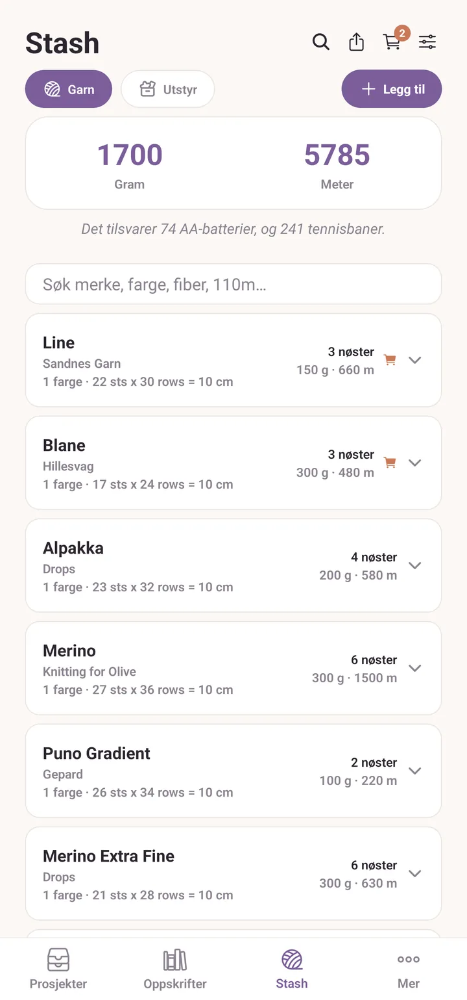
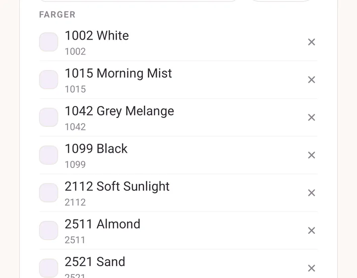
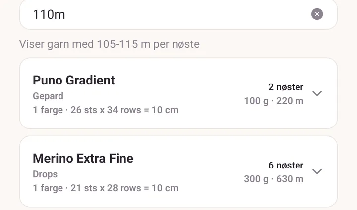
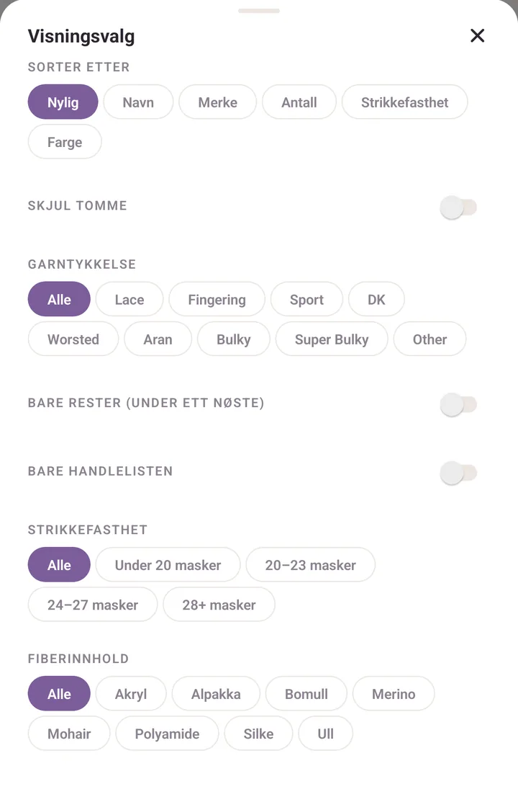
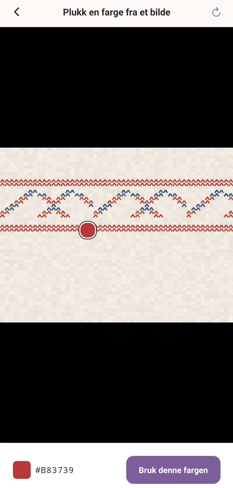

Stash
Det som ligger i kurven, kassen og skapet ditt. Holdt orden på så du vet hva du har uten å rote gjennom alt.
Slik er stashen ordnet
Fanen Stash åpner på Garn. Chipsen Utstyr ved siden av bytter til pinner og heklenåler.
Over listen står totalene dine i gram og meter (eller unser og yards, hvis du setter Imperial (oz, yd) i Innstillinger). Under dem ligger selve listen, i tre nivåer:
- en gruppe for hvert merke og garnnavn,
- en rad for hver farge inne i den,
- en rad for hvert fargeparti, når du har en farge i mer enn ett.
Trykk på en gruppe for å åpne og lukke den. Trykk på en fargerad for å åpne garnet.

Legge til garn
Trykk Legg til, til høyre for chipsene Garn og Utstyr. Skjemaet Legg til garn åpner seg. Bare litt er påkrevd: et merke og et antall nøster holder for å lagre, og resten kan vente.
To snarveier sitter øverst i skjemaet, og bare når du legger til, ikke når du redigerer:
- Velg fra biblioteket fyller skjemaet fra et garn du har lagret før.
- Strekkodeknappen ved siden av åpner skanneren. Se Strekkoder og garnbiblioteket.
Feltene, i den rekkefølgen du møter dem:
- Merke. Begynn å skrive, så får du forslag: merker du har brukt, pluss den innebygde katalogen over nordiske produsenter.
- Garnnavn. Når et merke er valgt, snevres navnene inn til det merkets garn. Velger du et kjent ett, fylles tykkelse, fiber og lengde inn, men bare der du ikke har skrevet noe selv.
- Farge / fargevariant, etter navn eller nummer. Forslagene viser nyansen ved siden av navnet der Purl kjenner den.
- Fargeparti, valgfritt, og verdt å ha. Samme farge, annet fargeparti, litt annen nyanse.
- Fargeprøve, velgeren for selve nyansen.
- Vekt: Lace, Fingering, Sport, DK, Worsted, Aran, Bulky, Super Bulky, Other.
- Fiberinnhold: trykk Legg til fiber og sett prosenter. Purl sier fra når de summerer til 100 %.
- Nøster, Gram / nøste, Meter / nøste, rett av banderolen.
- Pinne og Strikkefasthet.
- Notater. En nettadresse du skriver her blir en lenke du kan trykke på.
- Legg til i handlelisten, hvis du allerede vet at du vil ha mer.
Avansert rommer resten: Pris / nøste, Butikk, Heklenål, Heklefasthet, Vask, og Strekkoder som hører til dette garnet.
Trykk Legg til i stashen for å lagre. På et garn som finnes fra før leser knappen Lagre endringer, med Lagre som kopi og Slett garn under.
Flerfargede garn
Selvstripende, meleret, gradient. Velg den første nyansen i fargevelgeren, så dukker raden Garnfarger opp under. Trykk Legg til for en nyanse nummer to, og en tredje, opp til ti. Trykk på en fargeprøve for å endre den, eller på krysset for å ta den bort.
Garnet vises da som vannrette striper overalt der det dukker opp. Hvor hardt båndene møtes settes av Fargeovergang i flerfarget garn i Innstillinger.
Fargene Purl husker
Purl lærer garnet ditt mens du bruker det. Det er denne delen som gjør det andre nøstet av hva som helst raskt.
Et fargenavn betyr en nyanse. Lagre "Sandnes Garn Sunday" i "Curry" én gang, og neste gang du skriver Curry under det garnet, fyller fargeprøven seg selv ut. Forslagslisten viser nyansen ved siden av navnet, så du kan se den før du velger.
En strekkode kan bety en farge, ikke bare et produkt. Det er det en strekkode på en banderole egentlig er i butikken: den identifiserer nyansen i hyllen. Så når du skanner en kode Purl har sett på en farge før, får du fargen tilbake, ikke bare garnlinjen.
Én farge er én rad. Fargenavnet er identiteten. Hvis to oppføringer av samme garn endte som to atskilte "Curry"-rader fordi en fargeprøve ble trykket feil én gang, faller de sammen til én rad av seg selv.
En konflikt er et spørsmål, ikke en stille oppdeling. Hvis du lagrer et nytt nøste der nyansen er uenig med en farge med det navnet du allerede har, spør Purl Samme fargenavn, annen nyanse én gang, mens du fortsatt kan se forskjell: Bruk fargen jeg har, eller Behold denne. Den spør bare på et nytt garn. Å redigere et som finnes fra før tas som en bevisst retting.
Du kan se og rette det den har lært. Åpne Mer, og så Strekkodeskanner under Mer avanserte verktøy, og trykk på et garn i Lagrede garn. Listen Farger viser hver farge Purl kjenner for det garnet, med nyansen, fargekoden og hvor mange strekkoder som peker på den. Trykk på krysset på en farge for å glemme den.

Søking
Søkefeltet sitter over listen. Det folder bort aksenter, så "Jarbo" finner "Järbo", og det treffer merke, garn, farge, fiber og fargeparti.
Det leser også mål fra banderolen. Skriv et tall med en enhet, så filtrerer Purl etter hva et nøste rommer i stedet for etter tekst:
110mfinner nøster på rundt 110 meter, her 105 til 115.50gfinner opplegg på 50 gram, her 45 til 55.100-120msetter ditt eget vindu.>200mer alt som er lengre,<=50galt som er lettere.
Yards og unser virker på samme måte. En linje under feltet forteller deg hvilket vindu det landet på, for eksempel Viser garn med 105-115 m per nøste, så du aldri trenger å gjette hva det gjorde.

Sortering og filtrering
Trykk på ikonet med skyvebryterne øverst i Stash for Visningsvalg.
- Sorter etter: Nylig, Navn, Merke, Antall, Strikkefasthet, Farge. Valget ditt huskes.
- Skjul tomme tar bort alt som står på null nøster.
- Garntykkelse viser én tykkelse om gangen.
- Bare rester (under ett nøste) for restegarnprosjekter.
- Bare handlelisten for det du har merket for kjøp.
- Fiberinnhold: én fiber om gangen, hentet fra det stashen din faktisk inneholder, så den dukker opp når minst ett garn har fibrene sine fylt inn.
- Strikkefasthet: Under 20 masker, 20 til 23 masker, 24 til 27 masker, 28+ masker.

Bevegelser verdt å kunne
- Sveip et kort mot venstre for Slett.
- Sveip et kort mot høyre for Handle, som setter det på handlelisten.
- Hold inne en fargerad for å kopiere det garnet. Purl spør først, og åpner så kopien for redigering. Fin til "samme garn, annen farge".
- Hold inne en lagret fargeprøve i velgeren for å ta den av Dine farger. Selve fargen går ikke tapt.
- Hold inne en materialchips i utstyrsskjemaet for å fjerne den.
Plukke en farge fra et bilde
I fargevelgeren trykker du på pipetten ved siden av heksfeltet. Plukk en farge fra et bilde lar deg Ta et bilde eller Velg fra biblioteket, og så trykke på bildet for å prøve en piksel. Trykk Bruk denne fargen. Den raskeste måten å få en virkelig treffende farge av et nøste på, i stedet for å gjette på et fargehjul.

Fargepartier
Når du har én farge fordelt på to eller flere fargepartier med nøster i begge, advarer fargeraden deg: Ulike fargepartier: veksle mellom nøstene for å unngå en synlig strek. Verdt å høre på i et bærestykke.
Dele stashen din
Delingsikonet øverst i Stash sender hele garnlisten din som ren tekst, gruppert etter merke, med farger, fargepartier og antall. Nyttig i en melding til en venn, eller til deg selv i en butikk. Utstyr deles på samme måte fra visningen Utstyr.
Utstyr
Chipsen Utstyr bytter den samme fanen til pinner, heklenåler og verktøy. Legg til virker på samme måte, med sine egne Visningsvalg for Type og Materiale.
Utskiftbare pinner deler seg i spisser og kabler, så du holder orden på det du faktisk eier, og et prosjekt kan bruke hvilken som helst kombinasjon av dem. Størrelser du har oppsummerer dekningen.
Slå av den innebygde katalogen
Åpne Mer, trykk på tannhjulet øverst, og finn Innebygd garnkatalog under Standardvalg. Sett den til Av, så slutter Purl å foreslå merker, garn og fargevarianter fra den medfølgende nordiske katalogen, og lar bare garnet du har lagt inn selv stå igjen.
Se også
- Veiledning: garnet ditt, inn og ut: skanning, veiing og handlelisten, fra start til slutt.
- Strekkoder og garnbiblioteket: hva skanneren vet, og hvordan du retter den.
- Prosjekter: der garn møter en oppskrift, og der veiingene skjer.
- Sikkerhetskopier: å holde alt dette trygt.